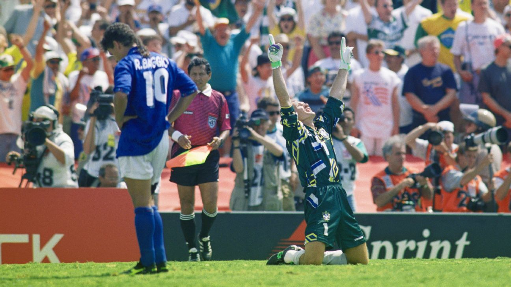

Gestiona publicaciones, categorías y contenido del sitio
Publicaciones Pendientes de Aprobación
Revisa y aprueba el contenido enviado por los usuarios
Por: @juanlopez
Pendiente
Entrevistas
Francia 1998
Cuauhtémoc Blanco: Memorias del 98
Entrevista exclusiva donde el Cuau recuerda su experiencia en
Francia 1998 y ese memorable gol a Corea del Sur con su
característico movimiento "Cuauhtemiña".
Por: @mariafutbol
Pendiente
Sedes
Brasil 2014
El Maracaná: Templo del fútbol mundial
Un recorrido por la historia del estadio más emblemático de Brasil,
desde el Maracanazo de 1950 hasta la final de 2014.
Todas las Publicaciones
JugadasAprobada
El gol del siglo de Maradona
Revive la jugada más icónica del Mundial México 86, donde Maradona
dejó atrás a medio equipo inglés en una jugada que quedó grabada
en la historia del fútbol mundial.
México 1986
❤️1.2k💬150👁️3.5k

PartidosAprobada
USA 94: La final definida por penales
La final más tensa de la historia, donde Brasil se coronó campeón
tras una dramática tanda de penales. El error de Baggio marcó
una de las imágenes más tristes del fútbol.
Estados Unidos 1994
❤️890💬120👁️2.1k
EntrevistasAprobada
Cuauhtémoc Blanco: Memorias del 98
Entrevista exclusiva donde el Cuau recuerda su experiencia en
Francia 1998 y ese memorable gol a Corea del Sur con su
característico movimiento "Cuauhtemiña".
Francia 1998
❤️650💬85👁️1.8k
SedesAprobada
El Maracaná: Templo del fútbol mundial
Un recorrido por la historia del estadio más emblemático de Brasil,
desde el Maracanazo de 1950 hasta la final de 2014.
Brasil 2014
❤️520💬70👁️1.5k
EstadísticasPendiente
Qatar 2022: Análisis de la final histórica
Un análisis profundo de la final entre Argentina y Francia,
considerada una de las mejores finales en la historia de los mundiales
con un emocionante empate y definición por penales.
Qatar 2022
❤️0💬0👁️0
CulturaRechazada
La cultura futbolística en Rusia 2018
Explorando las tradiciones y la pasión del fútbol en Rusia durante
el mundial, desde los fanáticos locales hasta las celebraciones
de los equipos visitantes.